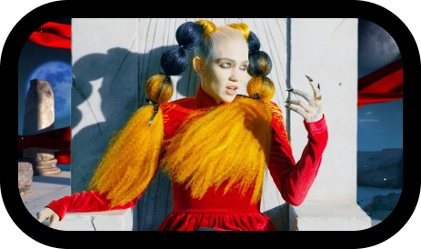

МИСС АНТРОПОЦЕН
IBM Plex sans
IBM Plex ™ — это корпоративный шрифт для IBM во всем мире. Plex — это семейство международных шрифтов, призванное отразить дух и историю бренда IBM и продемонстрировать уникальные отношения между человечеством и машиной — основной темой для IBM с начала века.
пятый и второй концептуальный студийный альбом канадской певицы и продюсера Граймс, выпущенный на лейбле 4AD 21 февраля 2020 года.

01. Так тяжело, что я провалилась сквозь землю
02. Дарксайд
03. Удалить навсегда
04. Насилие
05. 4 утра
06. Новые боги
07. Моё имя — Тьма
08. Ты будешь скучать по мне, когда меня не будет рядом
09. Перед лихорадкой
10. Айдору
Это концептуальный альбом, главной героиней которого стала «антропоморфная богиня климатических изменений». «Антропоцен» — геологический термин, придуманный для обозначения эпохи, в которую человек стал главным двигателем изменений. Также «Miss Anthropocene» — отсылка к слову «мизантроп».
Как и обещалось, альбом получился немного более мрачным, тяжелым и серьезным, чем предыдущий «Art Angels». Сама Grimes называет звучание альбома «ethereal nu metal», но первое слово («неземной») куда более точно описывает «Miss Anthropocene», чем все словосочетание.
IBM всегда служила посредником между человечеством и машиной.
Дата выпуска
Записан
Жанры
Длительность
Продюсер
Страна
Язык песен
Лейбл
21/02/2020
2017-2019
электро-гранж
45:00
Граймс
США
Английский
4AD Records
*Miss Anthropocene 01. So Heavy I Fell Through The Earth 02. Darkseid 03. Delete Forever 04. Violence 05. 4ÆM 06. New Gods
07. My Name Is Dark 08. You'll miss me when I'm not around 09. Before the fever 10. IDORU
В погоне за технологическими инновациями, по мнению артистки, люди обречены на уничтожение Земли и Grimes играет с этой идеей
Grimes часто называют певицей, но это не совсем верное определение. Она не только поет, но и самостоятельно пишет и продюсирует свою музыку (с небольшой сторонней помощью в некоторых треках). А на «Miss Anthropocene» и слова-то не всегда получается разобрать. Акцент делается не на вокал, а на общее настроение и посыл. Тем не менее, в первую очередь «Miss Anthropocene» — высказывание.
Яркое и сильное, на злободневную тему и оформленное в оригинальную, ни на что не похожую обертку, хорошее напоминание, что Grimes в первую очередь музыкант и артист, причем очень талантливый. Сама Grimes считает «Miss Anthropocene» «возможно, своей любимой работой». А вот «Art Angels» она критикует и считает его «пятном на своей репутации», хотя его приняли тепло. Но оба альбома хороши — просто по-разному.
Семейство Plex включает в себя Sans, Sans Condensed, Mono и Serif и имеет отличную разборчивость в печатных, веб и мобильных интерфейсах.
Когда IBM решили создать шрифт, который безошибочно принадлежал БЫ ИМ, история компании была их величайшим источником вдохновения.
plex позиционируются как шрифты широкого назначения, которые могут применяться в различных областях, от Web и подготовки документов до редакторов кода.

Кадры из клипа «УДАЛИТЬ НАВСЕГДА»
Дарксайд
Трек «Darkseid» отсылает к имени одного из самых могущественных злодеев Лиги Справедливости. Шумная и пространная композиция исследует тревожное чувство разобщенности между телом и душой, показывая навязчиво агрессивные строки тайваньско-американской музыкантки Aristophanes, она же — 潘 PAN. Бит, созданный Grimes, изначально предназначался для Lil Uzi Vert и его неизданного EP.
Насилие
«Violence» стала композицией о любви, которая, поется с точки зрения Земли и олицетворяет отношения между людьми и изменением климата как оскорбительные. Отношения, в которых Земля любит за свой счет, не получая ничего взамен.
Так тяжело, что я провалилась сквозь землю
«So Heavy I Fell Through the Earth», первый трек альбома, исследует проблему ненадежности отношений, в которой артистка показывает, как связь с мужчиной сопряжена с риском потери художественной целостности как женщины.
Моё имя — Тьма
К кульминации альбома подводит трек «My Name is Dark», в котором Grimes охватывает персонификацию своих негативных мыслей и взглядов: «Эта песня о том, когда тебе все равно, живешь ты или умираешь, когда ты просто в такой депрессии, что тебе всё равно»
Посредник между естественным
и спроектированным, эмоциональным
и рациональным, классикой
и современностью.
IBM Plex sans
МИСС
ГРАЙМС
АНТРОПОЦЕН
рассуждения о мире и судьбе планеты